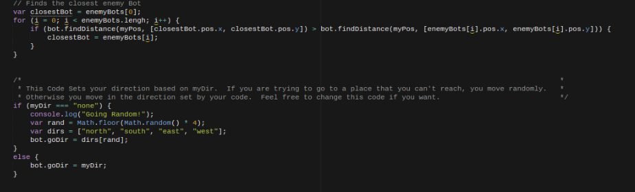

My Bot
For this project each student made their own bots using Javascript.We had two options when it came to fighting in tormanets
we could fight on a privite suver hosted by Mr.Hesbys friend or to fight on the online sever whith was open to anyone.
My bot's code looked alot like this:  You can look at the comments, which are the lines in green and have // in front of them, to see what each section of the code does. However, I do have a more in depth explanation for what exactly my bot does.
My bot first checks its own life to see whether or not it needs to go to a tavern to heal up.
The life I set it to go to a tavern is below or equal to 52. This is done by having a for loop
that takes an array of all the taverns, and uses an if statement to change the value of the variable
nearTav to whatever the coordinates of the closest tavern is. It then goes through an if/else statement
which first checks for a condition where bot.yourBot.life is less than or equal to 52, and if that is
true then it takes the coordinates from the for loop and goes there using bot.findPath. After that when
it makes sure its life is not in danger, it goes towards the nearest free mine to take for itself.
This is done similarlly to the tavern function, except in the for loop it takes in an array of all
the free mines rather than the taverns. Then in the same if/else statement, an else if is added where
the condition is that bot.yourBot.life is more than 52 and bot.freeMines.length more than 0, and if that
is true then the bot will go towards the nearest free mine. What bot.freeMines.length more than 0 does in
the conditions is that if there are no more free mines, the bot won't look for a free mine. Then it looks
for someone to attack and steal their mines. In this case, my bot is looking for the person who has more
mines than everybody else, and then my bot will attempt to attack them and take their mines. It does that
by first going through an if/else statement where it uses inequalities to check who has more mines that
others, then changing a variable, ""target,"" to the coordinates of said bot that has more mines than others.
Another variable is also added, ""attack,"" which is a boolean. If the person who has the most mines only
has one mine, attack will equal to false, as it is not worth going after that person if it is only for one mine.
Also if two people are tied for most mines, attack will equal to false as well.
To do this my if/else statement which tells my bot what direction it should go adds another else if condition
where if bot[target].life + 20 is less than bot.yourBot.life and attack = true, then it will find the path to
the bot with the most mines. Finally, if there is nothing else to do my bot will then just go towards the nearest
taken mine and attempt to take control of it. It does this using a very similar for loop to the free mines one,
except for taken mines, and simply just finds the path to the nearest taken mine if none of the other conditions are met,
so if my health is not critical, there are no free mines to take, and there isn't a good opportunity to
kill another bot for their mines, I will instead just work on stealing the opponents' mines.